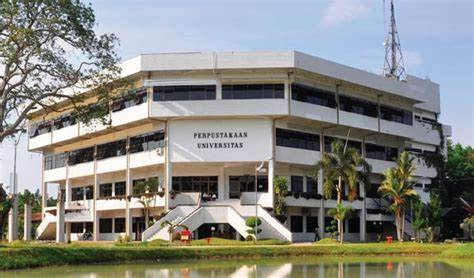
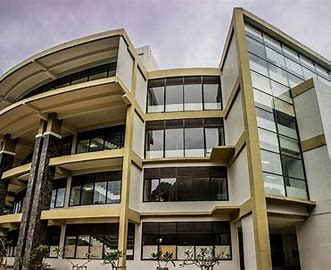

Nama: Billy Christian Pardede
Nim: 210709059
Disini saya akan menyediakan beberapa jenis perpustakaan, berikut:
1. Perpustakaan UNAIR

Menjadi perpustakaan yang unggul dengan fasilitas yang lengkap, modern, dan mampu memberikan pelayanan terbaik kepada pemakai berbasis teknologi informasi dan komunikasi Perpustakaan Universitas Airlangga
Dharmawangsa Dalam, Surabaya 60286 Telp : + 62 031 5030826 Fax : + 62 031 5020468Wa : + 62 82231517409.
Berikut tautan:Library UNAIR
2. Perpustakaan Universitas Sumatera Utara
Sejarah Perpustakaan dimulai dengan berdirinya Universitas Sumatera Utara (USU) pada 20 Agustus 1952. Perpustakaan pertama yang didirikan di lingkungan USU adalah Perpustakaan Fakultas Kedokteran (1952) dan kemudian disusul oleh Perpustakaan Fakultas Hukum (1954). Ketika itu USU masih bernaung di bawah Yayasan Universitas Sumatera Utara, yang kemudian diresmikan menjadi perguruan tinggi negeri ketujuh di Indonesia pada 20 Nopember 1957. Perpustakaan Universitas memiliki tugas untuk menunjang kegiatan Tri Dharma yaitu pendidikan dan pengajaran, penelitian, dan pengabdian kepada masyarakat. Untuk alamat Universitas berada di jalan l. Perpustakaan No.1, Padang Bulan, Kec. Medan Baru, Kota Medan, Sumatera Utara. Perpustakaan Universitas Sumatera Utara mempunyai aplikasi mobile dengan nama USULIB Mobile bisa dapatkan di Playstore.
Berikut tautan:Perpustakaan Universitas Sumatera Utara
3. Perpustakaan Universitas Padjadjaran
We have many types of collections in our library, range from Fictions to Sciences Material, from printed material to digital collections such CD-ROM, CD, VCD and DVD. We also collect daily serials publications such as newspaper and also monthly serials such as
magazines Address : GRAHA KANDAGA. Jalan Raya Bandung-Sumedang Km. 21 Jatinangor, Kab. Sumedang 45363 Jawa Barat Phone Number : 022-842 88888 Fax Number : 022-842 88898.Berikut link:Perpustakaan Universitas Padjadjaran